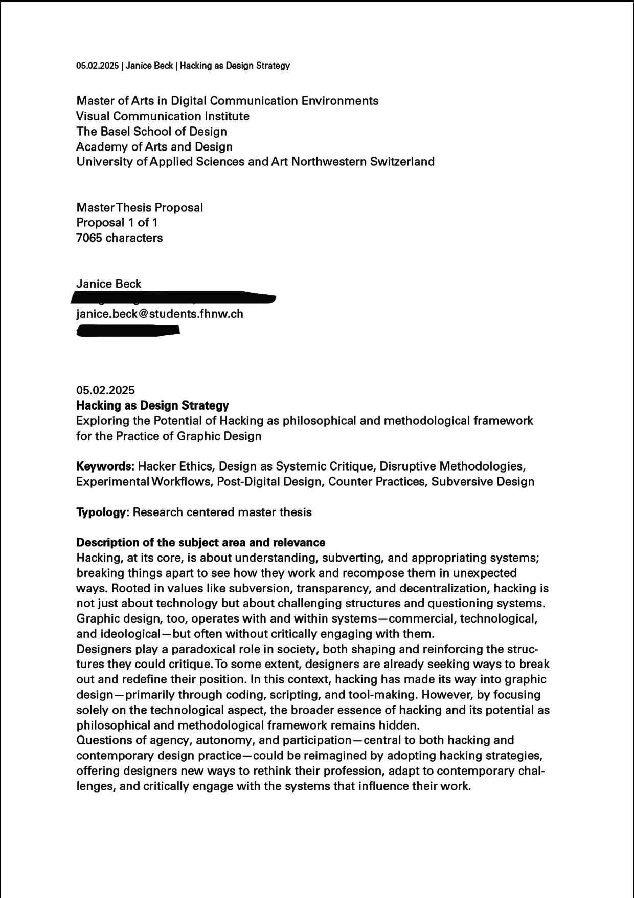
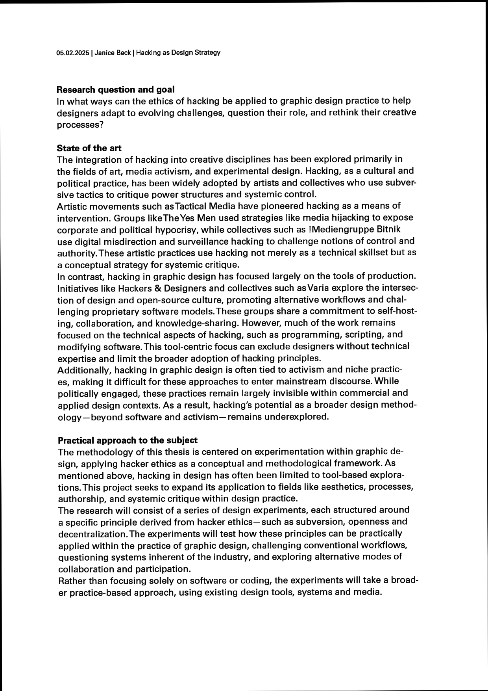
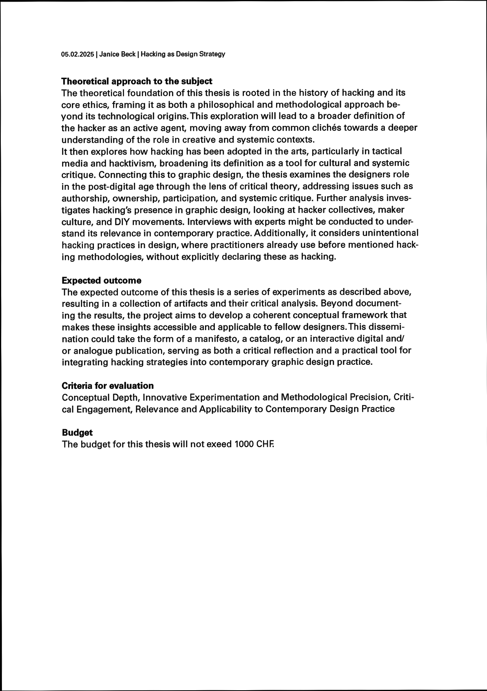

This is an experiment — and a real-time documentation of my master’s thesis at the Basel School of Design.
The project explores hacking as both a methodological and philosophical framework for designers, primarily through experiments around the practice of graphic design.
For a more detailed overview, you can read the proposal below. Here you can find the Experiments and the conceptual framework that shapes the process.
I’m always open to exchange — you’ll find my contact information at the end of the page.



My motivation for this thesis stems from my experience within the practice of graphic design and my belief in its potential as a tool for critique and change.
While graphic design is often limited to commercial and aesthetic functions, I see a greater capacity for it to challenge systems, question norms and create meaningful discourse. My own practice has shown me that engaging with experimental, process-oriented approaches not only deepens critical engagement with design, but also reshapes broader ways of thinking. In previous semesters I have successfully worked within experimental frameworks, proving that this methodology resonates with me. My last project specifically explored hacking through the subversion of graphic design tools, which led me to discover the underexplored potential of hacking as a method in design practice. This thesis is a continuation of that realisation aiming to expand the discourse around hacking as a strategy for adaptation, critique,
and transformation within graphic design.
Reach out:
My motivation for this thesis stems from my experience within the practice of graphic design and my belief in its potential as a tool for critique and change.
While graphic design is often limited to commercial and aesthetic functions, I see a greater capacity for it to challenge systems, question norms and create meaningful discourse. My own practice has shown me that engaging with experimental, process-oriented approaches not only deepens critical engagement with design, but also reshapes broader ways of thinking. In previous semesters I have successfully worked within experimental frameworks, proving that this methodology resonates with me. My last project specifically explored hacking through the subversion of graphic design tools, which led me to discover the underexplored potential of hacking as a method in design practice. This thesis is a continuation of that realisation aiming to expand the discourse around hacking as a strategy for adaptation, critique,
and transformation within graphic design.
Reach out:
| Contact: | |
|---|---|
| @jahahanice on Instagram | |
| Code: | see github |